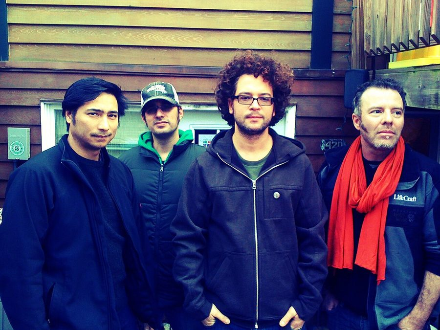

Fort Knox Five added to bill for Chinese Laundry NYE



As if Carl Craig and Switch weren’t enough already, the Chinese Laundry has recruited yet another tasty international guest to play their Club Club NYE gig. Fort Knox Five are locked to play alongside the names already announced, and will be in the country to promote their long awaited debut album Radio Free DC. Coming five years after they launched their Fort Knox Five Recordings label, and 2 years since their compilation of remixes The New Gold Standard, for fans of the US funkateers the album has been a very long time coming.
Thankfully we’ll also have the chance to hear it all this summer when they return for another Australian tour, and the Chinese Laundry’s Club Club NYE show will represent a chance to catch them in an more intimate environment.
Silver tickets to Club Club are already sold out, limited Gold and Bronze tickets still available on ITM. For more info on Fort Knox Five, check out ITM’s recent feature interview.